Picturebook Reading Lists
Picturebooks to explore with children or in the classroom. Publication details identify the edition listed where available. A buying link may show other editions. Publication places are shown where confirmed. Links include UK booksellers, publisher pages and independent reading guides where available. Editions and stock may vary.
Ad: This website uses affiliate links to Bookshop.org UK and Amazon UK. I may earn a commission on qualifying purchases. As an Amazon Associate I earn from qualifying purchases. Affiliate Disclosure.

178 reading-list entries
For edition-checked book options, see Educational Resources.
For more recommendations, explore BookTrust’s Bookfinder.
Disability and neurodivergence

What Happened to You?
James Catchpole · Karen George
· London: Faber & Faber
A child with one leg wants to play while other children ask about his body.

My City Speaks
Darren Lebeuf · Ashley Barron
· Toronto, Ontario: Kids Can Press
A girl who is visually impaired explores the city through sound, touch and movement.

My Three Best Friends and Me, Zulay
Cari Best · Vanessa Brantley-Newton
· New York: Margaret Ferguson Books / Farrar, Straus and Giroux
Zulay prepares to run in her school’s field day.
 Cover pending
Cover pendingSusan Laughs
Jeanne Willis · Tony Ross
· London: Andersen Press
Everyday scenes introduce Susan before the final image reveals her wheelchair.

A Friend for Henry
Jenn Bailey · Mika Song
· San Francisco, California: Chronicle Books
A classroom friendship told from the perspective of an autistic child.

A Day with No Words
Tiffany Hammond · Kate Cosgrove
· New Egypt, New Jersey: Wheat Penny Press
A family’s day out centres communication through an AAC device.

We Move Together
Kelly Fritsch and Anne McGuire · Eduardo Trejos
· Chico, California: AK Press
A story about access, solidarity and finding ways to move together.
- Cover pending
You Are Enough: A Book About Inclusion
Margaret O’Hair and Sofia Sanchez · Sofia Cardoso
· New York: Scholastic Inc.
An illustrated celebration of belonging and difference.
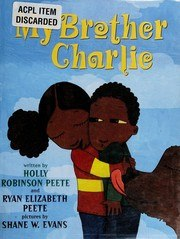
My Brother Charlie
Holly Robinson Peete and Ryan Elizabeth Peete · Shane W. Evans
· New York: Scholastic Press
A sister describes her relationship with her autistic twin brother.
- Cover pending
Just Ask! Be Different, Be Brave, Be You
Sonia Sotomayor · Rafael López
· New York: Philomel Books
Children introduce different ways of experiencing and participating in the world.
- Cover pending
Too Sticky! Sensory Issues with Autism
Jen Malia · Joanne Lew-Vriethoff
· Albert Whitman & Company
A child navigates the sensory demands of a classroom slime experiment.

This Beach Is Loud!
Samantha Cotterill
· New York: Dial Books for Young Readers
A beach trip shows how noise and other sensory experiences can become overwhelming.

The Girl Who Thought in Pictures: The Story of Dr. Temple Grandin
Julia Finley Mosca · Daniel Rieley
· Seattle, Washington: The Innovation Press
An illustrated biography introducing Temple Grandin and her visual way of thinking.

The Abilities in Me: Autism
Gemma Keir · Adam Walker-Parker
· Independently published
A starting point for talking about autism and individual differences.
- Cover pending
Amazing
Steve Antony
· London: Hodder Children’s Books
A wheelchair user and his pet dragon have adventures together in a story where disability is part of everyday life.
- Cover pending
We’re All Wonders
R. J. Palacio
· New York: Alfred A. Knopf
Auggie narrates what it feels like to be stared at and invites readers to consider how they see others.

I Am Not a Label: 34 Disabled Artists, Thinkers, Athletes and Activists from Past and Present
Cerrie Burnell · Lauren Mark Baldo
· Wide Eyed Editions
An illustrated collection that gives readers several different starting points for exploring disabled lives and achievements.

The Black Book of Colors
Menena Cottin · Rosana Faría · Elisa Amado (translator)
· Toronto: Groundwood Books
Raised images and braille invite readers to explore how colour can be described through senses other than sight.

Elephant Man
Mariangela Di Fiore · Hilde Hodnefjeld · Rosie Hedger (translator)
2015 · Annick Press
English translation of Elefantmannen, a personal favourite.
English edition details · My article on Elefantmannen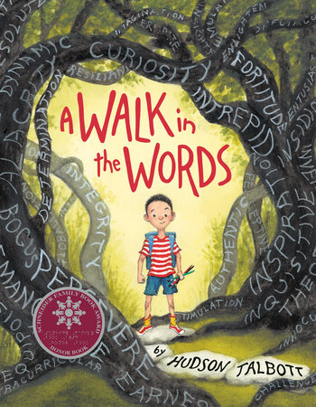
Cover pendingA Walk in the Words
Hudson Talbott
2021 · Nancy Paulsen Books · ISBN 9780399548710
An autobiographical picturebook that uses changing typography to convey the experience of learning to read at one’s own pace.
Edition and cover details Cover pending
Cover pendingUp and Down Mum
Child’s Play; illustrated by Summer Macon
2019 · Child’s Play · ISBN 9781786283399
A child describes everyday life with a mother who has bipolar disorder. The roller-coaster imagery gives readers a starting point for discussion.
Edition and cover details
A Sky-Blue Bench
Bahram Rahman; illustrated by Peggy Collins
2021 · Pajama Press · ISBN 9781772782226
In Afghanistan, Aria sets out to make a bench that will let her sit comfortably in school with her prosthetic leg.
Edition and cover details
Max the Champion
Sean Stockdale and Alex Strick; illustrated by Ros Asquith
Frances Lincoln Children’s Books · ISBN 9781847805195
Max imagines sporting glory throughout an ordinary school day. Illustrations show disabled and non-disabled children playing together.
Edition and cover details- Cover pending
You Can!
Alexandra Strick · Steve Antony
2021 · Otter-Barry Books
Follow the same children across life stages and look for the visual stories that run alongside the text.
- Cover pending
We Can!: Make a Difference
Alexandra Strick · Steve Antony
2024 · Otter-Barry Books · ISBN 9781915659309
A child-led festival makes room for accessible play and collective action.
- Cover pending
Sam’s Super Seats
Keah Brown · Sharee Miller
2022 · Kokila
Sam’s shopping trip with friends asks who can comfortably use public spaces. It makes room for fatigue, rest and fun.
- Cover pending
You’re SO Amazing!
James Catchpole and Lucy Catchpole · Karen George
2023 · Faber
Joe questions why everyday play attracts praise simply because he is disabled. Read alongside What Happened to You?
- Cover pending
Pablo and the Noisy Party
Andrew Brenner and Sumita Majumdar
2020 · Ladybird
Pablo and his imagined companions find ways to respond when a party becomes too loud.
- Cover pending
Gina Kaminski Saves the Wolf
Craig Barr-Green · Francis Martin
2023 · Little Tiger
An autistic child rewrites Little Red Riding Hood, using the picturebook to question who decides how a familiar tale ends.
- Cover pending
Loud!
Rose Robbins
2021 · Scallywag Press
Abigail’s restlessness takes on a new meaning when her teacher notices her talent for making music. BookTrust identifies ADHD as implied.
- Cover pending
My Little Drummer
Sian Radford · Gwen Millward
2026
Rhyming language gives readers a way to hear and discuss one child’s everyday experience of ADHD.
Deaf and hard-of-hearing experiences
Picturebooks featuring deaf and hard-of-hearing characters, Deaf history and sign language. Signed languages vary by country, so check which language an edition depicts.

Can Bears Ski?
Raymond Antrobus · Polly Dunbar
· Somerville, Massachusetts: Candlewick Press
A young bear makes sense of sounds, hearing loss and new ways to communicate.
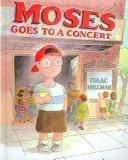
Moses Goes to a Concert
Isaac Millman
· New York: Farrar, Straus and Giroux
A Deaf class meets a Deaf percussionist. The book includes American Sign Language (ASL).

Listen: How Evelyn Glennie, a Deaf Girl, Changed Percussion
Shannon Stocker · Devon Holzwarth
· New York: Dial Books for Young Readers
A picturebook biography of Scottish percussionist Evelyn Glennie.
- Cover pending
The Sound of All Things
Myron Uhlberg · Ted Papoulas
· Atlanta, Georgia: Peachtree Publishers
A hearing child and his Deaf parents share an outing at Coney Island.
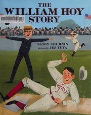
The William Hoy Story: How a Deaf Baseball Player Changed the Game
Nancy Churnin · Jez Tuya
· Albert Whitman & Company
A picturebook biography of the Deaf baseball player William Hoy.
- Cover pending
Freddie and the Fairy
Julia Donaldson · Karen George
· London: Macmillan Children’s Books
A wish-granting fairy who is hard of hearing prompts Freddie to rethink how he communicates.

Dad, Jackie, and Me
Myron Uhlberg · Colin Bootman
· Atlanta, Georgia: Peachtree Publishers
A hearing boy and his Deaf father bond over baseball and Jackie Robinson.
The Printer
Myron Uhlberg · Henri Sørensen
· Atlanta, Georgia: Peachtree Publishers
A Deaf printer uses sign to warn colleagues about a fire.

Moonbird
Joyce Dunbar · Jane Ray
· London: Doubleday
A deaf prince encounters a bird that helps him and those around him discover different ways to communicate.

Sound Switch Wonder
Christine J. Ko and Owen Whang · Katie Crumpton
· West Margin Press
A deaf child and his mother share what listening with cochlear implants can feel like.
 Cover pending
Cover pendingDachy’s Deaf
Jack Hughes
· London: Franklin Watts
A young dinosaur wears a hearing aid and has an adventure with friends.
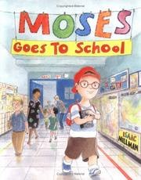
Moses Goes to School
Isaac Millman
· New York: Farrar, Straus and Giroux
Moses’s school day unfolds through pictures, written English and examples of American Sign Language.

The Deaf Musicians
Pete Seeger and Paul DuBois Jacobs · R. Gregory Christie
· New York: G. P. Putnam’s Sons
A jazz pianist who loses his hearing finds new collaborators through a sign language class.
 Cover pending
Cover pendingMy First Signs
Illustrated by Annie Kubler
Child’s Play · 2004 · British Sign Language edition · ISBN 9781904550044
A board book featuring everyday BSL signs with drawings of babies using them in context.
Edition and cover details
Chinese diasporic childhoods and cultural identity
 Cover pending
Cover pendingEyes That Kiss in the Corners
Joanna Ho · Dung Ho
· New York: Harper
A girl sees a family resemblance across generations and learns to value it.

Amy Wu and the Perfect Bao
Kat Zhang · Charlene Chua
· New York: Aladdin
Making bao with family gives Amy room to learn by experimenting.
 Cover pending
Cover pendingDim Sum for Everyone!
Grace Lin
· New York: Alfred A. Knopf
A family shares small dishes at a dim sum restaurant, with details that invite children to talk about food and family routines.

The Truth About Dragons
Julie Leung · Hanna Cha
· New York: Henry Holt and Company
Two grandmothers tell different dragon stories, both part of a child’s inheritance.

The Rice in the Pot Goes Round and Round
Wendy Wan-Long Shang · Lorian Tu
· New York: Orchard Books
A cumulative rhyme follows a Chinese American family gathering around the dinner table.
 Cover pending
Cover pendingA Big Mooncake for Little Star
Grace Lin
· New York: Little, Brown and Company
A playful story about the phases of the moon, inspired by the Mid-Autumn Festival.
- Cover pending
Chinatown
William Low
· New York: Henry Holt and Company
A child accompanies his grandmother through a neighbourhood shaped by Chinese migration.

Dim Sum Palace
X. Fang
· London: Pushkin Children’s Books
A fantastical visit to a dim sum palace centres food, family and imagination.
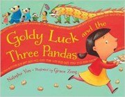
Goldy Luck and the Three Pandas
Natasha Yim · Grace Zong
· Watertown, Massachusetts: Charlesbridge
A Lunar New Year retelling of Goldilocks that makes room for repair and hospitality.
 Cover pending
Cover pendingBringing In the New Year
Grace Lin
· New York: Alfred A. Knopf
A Chinese American family prepares for Lunar New Year through shared household traditions.

I Dream of Popo
Livia Blackburne · Julia Kuo
· New York: Roaring Brook Press
A child and her grandmother sustain a bond across the distance between Taiwan and the United States.

Year of the Cat
Richard Ho · Jocelyn Li Langrand
· New York: Greenwillow Books
A retelling of the zodiac race that asks what happened to the cat.

Tofu Takes Time
Helen H. Wu · Julie Jarema
· Minneapolis, Minnesota: Beaming Books
A girl learns patience as she and her grandmother make tofu together.
 Cover pending
Cover pendingKite Flying
Grace Lin
· New York: Alfred A. Knopf
A family makes and flies a dragon kite together.

Two New Years
Richard Ho · Lynn Scurfield
· San Francisco, California: Chronicle Books
A Chinese Jewish family celebrates Lunar New Year and Rosh Hashanah.

Grandpa Grumps
Katrina Moore · Xindi Yan
· Little Bee Books
Daisy tries to connect with her visiting grandfather across a language barrier.

My Day with Gong Gong
Sennah Yee · Elaine Chen
· Annick Press
A trip through Chinatown gives a child and her grandfather new ways to understand one another.
Gender and sexuality
Discuss which expectations the stories challenge and what possibilities they offer their characters.

Julián Is a Mermaid
Jessica Love
· Somerville, Massachusetts: Candlewick Press
Julián explores dress and self-expression with the support of his abuela.

When Aidan Became a Brother
Kyle Lukoff · Kaylani Juanita
· New York: Lee & Low Books
A transgender boy thinks about how to welcome a new sibling.

And Tango Makes Three
Justin Richardson and Peter Parnell · Henry Cole
· New York: Simon & Schuster Books for Young Readers
Two male penguins raise a chick together in a story based on real penguins.

Red: A Crayon’s Story
Michael Hall
· New York: Greenwillow Books
A crayon labelled red discovers that it can draw in blue.
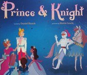
Prince & Knight
Daniel Haack · Stevie Lewis
· New York: Little Bee Books
A fairy-tale romance between a prince and a knight.

My Rainbow
DeShanna Neal and Trinity Neal · Art Twink
· New York: Kokila
A mother makes a wig that reflects her transgender daughter’s sense of herself.
 Cover pending
Cover pendingCalvin
JR Ford and Vanessa Ford · Kayla Harren
· New York: G. P. Putnam’s Sons
Calvin prepares to tell his family and school that he is a boy.
- Cover pending
Uncle Bobby’s Wedding
Sarah S. Brannen · Lucia Soto
· London: Hodder Children’s Books
A young girl wonders what her uncle’s marriage will mean for their relationship.

The Boy & the Bindi
Vivek Shraya · Rajni Perera
· Vancouver, British Columbia: Arsenal Pulp Press
A boy explores his curiosity about his mother’s bindi and what it means to wear one.

Love Makes a Family
Sophie Beer
· New York: Dial Books for Young Readers
A board book showing different families through everyday moments of care.

Bathe the Cat
Alice B. McGinty · David Roberts
· San Francisco, California: Chronicle Books
A lively comedy about a family with two dads and a cat intent on avoiding bath time.

Neither
Airlie Anderson
· New York and Boston: Little, Brown and Company
An imaginative story about belonging beyond a world organised around two categories.

Introducing Teddy: A Gentle Story About Gender and Friendship
Jessica Walton · Dougal MacPherson
· London: Bloomsbury
A teddy bear shares her gender identity with a friend.

Worm Loves Worm
J. J. Austrian · Mike Curato
· New York: Balzer + Bray
Two worms plan a wedding and question the roles their friends expect them to play.
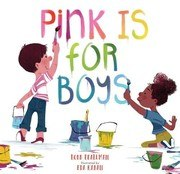
Pink Is for Boys
Robb Pearlman · Eda Kaban
· Philadelphia, Pennsylvania: Running Press Kids
Colour offers a simple way into a conversation about gender stereotypes.

My Shadow Is Pink
Scott Stuart
· Larrikin House
A child’s shadow becomes a visual way to explore gender expression and family support.

A House for Everyone: A Story to Help Children Learn about Gender Identity and Gender Expression
Jo Hirst · Naomi Bardoff
· London: Jessica Kingsley Publishers
Children build a playhouse together and introduce different ways of expressing who they are.
- Cover pending
William’s Doll
Charlotte Zolotow · William Pène du Bois

The Paper Bag Princess
Robert Munsch · Michael Martchenko

Me and My Dysphoria Monster
Laura Kate Dale; illustrated by Hui Qing Ang
2022 · Jessica Kingsley Publishers · ISBN 9781839970931
Uses a monster as a visual metaphor to help young readers talk about gender dysphoria and the support a child can receive.
Edition and cover details
Mommy, Mama, and Me
Lesléa Newman · Carol Thompson
2009 · Tricycle Press · ISBN 9781582462639
A toddler spends the day with two mums in a rhyming board book.
Daddy, Papa, and Me
Lesléa Newman · Carol Thompson
2009 · Tricycle Press · ISBN 9781582462622
Rhythmic words and images follow a toddler and two dads through everyday play and care.
Grief, loss and remembrance
Compare what an object, a shared activity or an illustration can hold on to after a loss.
 Cover pending
Cover pendingMichael Rosen’s Sad Book
Michael Rosen · Quentin Blake
· London: Walker Books
Words and pictures make space for grief that can persist and change over time.
- Cover pending
Grandad’s Island
Benji Davies
· London: Simon & Schuster Children’s Books
An imaginative journey gives a child a way to say goodbye.

The Heart and the Bottle
Oliver Jeffers
· London: HarperCollins Children’s Books
A visual metaphor for withdrawing after loss and gradually opening up again.

The Goodbye Book
Todd Parr
· New York: Little, Brown and Company
A small fish experiences the feelings that can follow a goodbye.
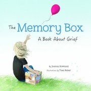
The Memory Box: A Book About Grief
Joanna Rowland · Thea Baker
· Minneapolis, Minnesota: Sparkhouse Family
A child finds a tangible way to keep memories close.
 Cover pending
Cover pendingBadger’s Parting Gifts
Susan Varley
· London: Andersen Press
Friends remember Badger through the skills and experiences he shared with them.

Always and Forever
Alan Durant · Debi Gliori
· London: Picture Corgi
Animal friends mourn Fox and find ways to remember their life together.

The Pond
Nicola Davies · Cathy Fisher
· Graffeg
A family builds a pond after the death of a child’s father.
- Cover pending
Ocean Meets Sky
Terry Fan and Eric Fan
· New York: Simon & Schuster Books for Young Readers
A boy builds a boat to remember the grandfather who told him stories.

Ida, Always
Caron Levis · Charles Santoso
· New York: Atheneum Books for Young Readers
Two polar bears face illness and death, with attention to the friendship that continues through memory.

Goodbye Mog
Judith Kerr
· London: Collins
A family says goodbye to an old cat as a new kitten arrives.
- Cover pending
Cry, Heart, But Never Break
Glenn Ringtved · Charlotte Pardi
· New York: Enchanted Lion Books
A fable in which Death helps children think about their grandmother’s approaching death.

Many Shapes of Clay: A Story of Healing
Kenesha Sneed
· Munich, London and New York: Prestel
A child works with clay while learning how to live with loss.

The Scar
Charlotte Moundlic · Olivier Tallec
· Somerville, Massachusetts: Candlewick Press
A boy tries to hold on to memories of his mother after her death.
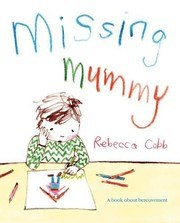
Missing Mummy
Rebecca Cobb
· London: Macmillan Children’s Books
A child experiences the confusion and sadness that follow the death of a parent.

The Invisible String
Patrice Karst · Joanne Lew-Vriethoff
· Little, Brown Books for Young Readers
An invisible string gives children a metaphor for staying connected to loved ones across separation and loss.
 Cover pending
Cover pendingThe Rabbit Listened
Cori Doerrfeld
· New York: Dial Books
When something Taylor has made falls apart, a quiet companion offers a way to think about listening after loss or disappointment.

Duck, Death and the Tulip
Wolf Erlbruch

Old Pig
Margaret Wild · Ron Brooks
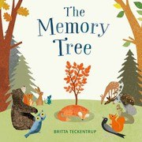
The Memory Tree
Britta Teckentrup
2014 · Orchard Books · ISBN 9781408326343
Fox’s friends share memories of him. As their stories accumulate, a tree grows in the clearing. The story uses sleep as a metaphor for death, which may need explaining to young readers.

Mum’s Jumper
Jayde Perkin
2019 · Book Island · ISBN 9781911496137
After her mum dies, a girl finds comfort in wearing her red jumper. Look at how the palette shifts as the jumper changes meaning. About parental death, for shared reading from around age five.

The Boy and the Gorilla
Jackie Azúa Kramer · Cindy Derby
2020 · Walker Books · ISBN 9781406395549
A quiet conversation with a gorilla helps a boy ask the questions he has been holding back since his mother’s death. The dialogue leaves space for silences in a shared reading.

The Hare-Shaped Hole
John Dougherty · Thomas Docherty
2023 · Frances Lincoln Children’s Books · ISBN 9780711276055
A turtle keeps seeing the space where his friend ought to be. Rhyme and negative space make this accessible for an early-primary conversation about the death of a friend.

The Phone Booth in Mr. Hirota’s Garden
Heather Smith · Rachel Wada
2019 · Orca Book Publishers · ISBN 9781459821033
After a tsunami, a disconnected phone gives villagers somewhere to speak to the people they have lost. About a parent’s death and collective bereavement; preview for younger readers.

A Last Goodbye
Elin Kelsey · Soyeon Kim
2020 · Owlkids Books · ISBN 9781771473644
Mixed-media scenes invite readers to consider how different animals respond to death. Useful for primary-age readers approaching bereavement through illustrated nonfiction.
Retellings and intertextuality
Which stories do readers need to recognise, and how does each book reward readers who recognise them?
- Cover pending
Each Peach Pear Plum
Janet and Allan Ahlberg
- Cover pending
The Jolly Postman or Other People’s Letters
Janet and Allan Ahlberg

The Stinky Cheese Man and Other Fairly Stupid Tales
Jon Scieszka · Lane Smith

After the Fall: How Humpty Dumpty Got Back Up Again
Dan Santat
Cultural identity and anti-racism
Consider whose point of view shapes the story and who gets to define what belonging means.

Amazing Grace
Mary Hoffman · Caroline Binch
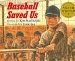
Baseball Saved Us
Ken Mochizuki · Dom Lee

The Day You Begin
Jacqueline Woodson · Rafael López
- Cover pending
The Proudest Blue: A Story of Hijab and Family
Ibtihaj Muhammad with S. K. Ali · Hatem Aly
Migration, refuge and belonging
Compare how images and words handle departure, unfamiliar places and the task of making a home.

The Arrival
Shaun Tan

The Colour of Home
Mary Hoffman · Karin Littlewood

The Journey
Francesca Sanna
My Name Is Not Refugee
Kate Milner

My Two Blankets
Irena Kobald; illustrated by Freya Blackwood
2014 · Hardie Grant Egmont · ISBN 9781760501419 (publisher-listed edition)
A child who has moved to a new country imagines familiar words as a blanket and begins weaving another as a friendship grows.
Edition details
Lubna and Pebble
Wendy Meddour; illustrated by Daniel Egnéus
2019 · Oxford University Press · ISBN 9780192767257 (paperback)
A familiar pebble comforts Lubna in a refugee camp. When another child arrives, she weighs what it would mean to give it away.
Edition detailsThe Suitcase
Chris Naylor-Ballesteros
2019 · Nosy Crow
An exhausted newcomer arrives with a suitcase. The other animals’ decision to open it invites discussion about trust and welcome.
Edition details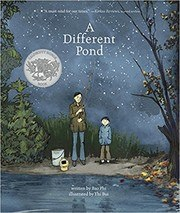
A Different Pond
Bao Phi; illustrated by Thi Bui
2017 · Capstone Young Readers · ISBN 9781623708030
A father and son fish before dawn in Minneapolis. Their conversation connects the family’s present routines with memories of Vietnam.
Edition details
The Paper Boat: A Refugee Story
Thao Lam
2020 · Owlkids Books · ISBN 9781771473637
Wordless collage follows a family’s flight from Vietnam alongside a journey made by ants. Discuss war and forced flight in context.
Edition details
The Name Jar
Yangsook Choi
2001 · Alfred A. Knopf · ISBN 9780375806131 (hardback)
After moving from Korea to the United States, Unhei considers choosing a new name. The story opens up questions about pronunciation, friendship and belonging.
Edition detailsStepping Stones: A Refugee Family’s Journey
Margriet Ruurs; illustrated by Nizar Ali Badr
2016 · Orca Book Publishers · ISBN 9781459814905
Arabic and English text accompanies stone arrangements that trace a Syrian family’s flight. Read together when discussing war and displacement with younger readers.
Edition details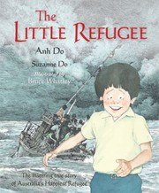
The Little Refugee
Anh Do and Suzanne Do; illustrated by Bruce Whatley
2011 · Allen & Unwin · ISBN 9781742378329
An autobiographical account of a family’s voyage from Vietnam and a child’s first years in Australia. Includes a perilous sea crossing.
Edition detailsWhere Will I Live?
Rosemary McCarney
2017 · Second Story Press · ISBN 9781772600285
Photographs and brief questions invite readers to consider what home means to children displaced by conflict. Use with context about the photographs and forced migration.
Edition details
Room on Our Rock
Kate and Jol Temple; illustrated by Terri Rose Baynton
Scholastic Press
Read the same text from front to back and back to front to see how the order of the lines changes a story about turning newcomers away.
Edition details
Granny Came Here on the Empire Windrush
Patrice Lawrence · Camilla Sucre
2022 · Nosy Crow · ISBN 9781839942310
Objects from Granny’s suitcase open up a family history of migration from Trinidad to England. The story touches on racism and belonging.
War, conflict and peace
Compare the viewpoints from which conflict is shown. Check the images and subject matter before sharing with younger readers.

War Game
Michael Foreman

The Enemy: A Book About Peace
Davide Cali · Serge Bloch

Why?
Nikolai Popov
- Cover pending
The Day War Came
Nicola Davies · Rebecca Cobb
- Cover pending
Only a Donkey
Celeste Walters · Patricia Mullins
2008 · Picture Puffin paperback · ISBN 9780143501220
A teased farm donkey has a dream that connects the animals’ journey with the Australian story of Simpson and his donkey. Themes include war and remembrance.
- Cover pending
Simpson and His Donkey
Mark Greenwood · Frané Lessac
2008 · Walker Books Australia · ISBN 9781921150180
A picturebook retelling of Gallipoli through the work of a stretcher-bearer and his donkey. Read with historical context for older primary readers.
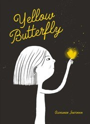
Yellow Butterfly: A Story from Ukraine
Oleksandr Shatokhin
2023 · Brooklyn: Red Comet Press · ISBN 9781636550640
Wordless spreads move from dark images of war to the colours of the Ukrainian flag. Preview the intense imagery before sharing it with younger readers.

The Treasure Box
Margaret Wild · Freya Blackwood
2013 · Penguin/Viking · ISBN 9780670073658
A boy carries a rescued book as his family flees war. Notice how the collage makes fragments of print part of the story about memory. Includes bombing and bereavement.
- Cover pending
The Librarian of Basra: A True Story from Iraq
Jeanette Winter
2019 · Clarion Books paperback · ISBN 9780358141839
Based on Alia Muhammad Baker’s efforts to save the books of Basra’s library. It offers primary readers a way to talk about what communities preserve during war.
The General
Janet Charters · Michael Foreman
2013 · Templar Books paperback · ISBN 9781848771604
A general’s encounter with the natural world changes what he wants to do with his army. The stylised illustrations invite comparison between military order and the life of the landscape.

The Cats in Krasinski Square
Karen Hesse · Wendy Watson
2004 · New York: Scholastic Press · ISBN 9780439435406
This historical picturebook follows a Jewish girl who helps the Resistance in Nazi-occupied Warsaw. For older primary and secondary readers with historical context about the Holocaust.

Gleam and Glow
Eve Bunting · Peter Sylvada
2001 · Harcourt · ISBN 9780152025960
Children forced to leave home by war entrust two goldfish to a pond. Read with older primary children to discuss displacement and what it means to return.
Bullying and exclusion
Look for the point at which another character notices exclusion and decides what to do.

Willy the Wimp
Anthony Browne

Chrysanthemum
Kevin Henkes
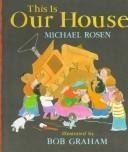
This Is Our House
Michael Rosen · Bob Graham
- Cover pending
The Invisible Boy
Trudy Ludwig · Patrice Barton
Friendship, care and loneliness
Compare how distance, page space or expressions show what a character needs from others.
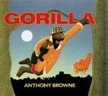
Gorilla
Anthony Browne

Lost and Found
Oliver Jeffers
- Cover pending
The Rabbit Listened
Cori Doerrfeld
A Friend for Henry
Jenn Bailey · Mika Song
- Cover pending
The Kindness Club
Kate Bullen-Casanova; illustrated by Dave Petzold
2022 · Bright Light · ISBN 9781761210440
Group play provides a setting for everyday kindness and for challenging assumptions about how children should play.
Edition and cover details  Cover pending
Cover pendingSomething, Someday
Amanda Gorman; illustrated by Christian Robinson
2023 · Viking Books for Young Readers · ISBN 9780593203255
A small act of care becomes a shared effort to improve the neighbourhood.
Edition and cover details
Picturebooks that invite philosophical questions
Ask which questions the books leave open and how the pictures affect possible answers.

The Big Question
Wolf Erlbruch
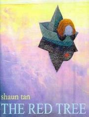
The Red Tree
Shaun Tan
- Cover pending
What Do You Do with an Idea?
Kobi Yamada · Mae Besom
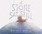
A Stone Sat Still
Brendan Wenzel
Art and visual storytelling
Use the books to compare visual rhythm, scale and framing. The historical cover shows how book design can frame a story.
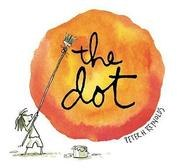
The Dot
Peter H. Reynolds

The Shape Game
Anthony Browne
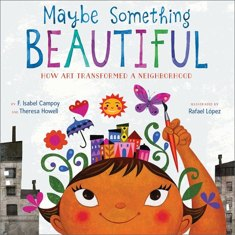
Maybe Something Beautiful: How Art Transformed a Neighborhood
F. Isabel Campoy and Theresa Howell · Rafael López
- Cover pending
Yayoi Kusama Covered Everything in Dots and Wasn’t Sorry
Fausto Gilberti
2020 · Phaidon · ISBN 9781838660802
A picturebook biography that uses recurring dots to echo Kusama’s art.
Edition and cover details

Challenging picturebooks
Discuss what each book leaves unresolved. Preview themes of loss, danger or exclusion before using these books with children.
- Cover pending
Fox
Margaret Wild · Ron Brooks
- Cover pending
Varmints
Helen Ward · Marc Craste

The Island
Armin Greder
- Cover pending
Small in the City
Sydney Smith
The Red Tree
Shaun Tan
Trace how recurring visual details give shape to feelings the narrator struggles to name.

The Rabbits
John Marsden · Shaun Tan
Discuss how the narration and illustrations frame colonisation and dispossession.

The Dam
David Almond · Levi Pinfold
Ask what music and memory can preserve as a valley is flooded.
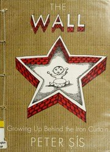
The Wall: Growing Up Behind the Iron Curtain
Peter Sís
Compare how a personal story and historical details help readers piece together life under censorship.
Duck, Death and the Tulip
Wolf Erlbruch
Consider how gesture and sparse dialogue shape a conversation about mortality.
The Journey
Francesca Sanna
Notice how scale and visual metaphor communicate the uncertainty of forced migration.
 Cover pending
Cover pendingThe Day War Came
Nicola Davies · Rebecca Cobb
Follow the image of the chair as it moves from a sign of exclusion to an invitation.
- Cover pending
The Inheritance
Armin Greder
Ask what the sparse text leaves the reader to infer about power and responsibility.
Metafictional picturebooks
These books draw attention to how stories are told. Look for characters who speak to the reader, books within books and pages that become part of the story.

The Three Pigs
David Wiesner
Characters step outside their printed story and move between different narrative worlds.
The Stinky Cheese Man and Other Fairly Stupid Tales
Jon Scieszka · Lane Smith
The narrator and characters disrupt familiar fairy tales and the order of the book itself.
- Cover pending
We Are in a Book!
Mo Willems
Elephant and Piggie discover they are being read and try to influence what the reader says.
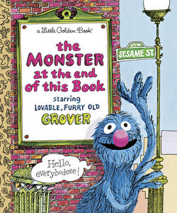
Cover pendingThe Monster at the End of This Book
Jon Stone · Michael Smollin
Grover addresses the reader and tries to stop the page turns that move his story forward.

This Book Just Ate My Dog!
Richard Byrne
The gutter swallows characters and the reader is asked to intervene.

Chloe and the Lion
Mac Barnett · Adam Rex
The author and illustrator appear as characters and disagree about how to tell the story.

Open This Little Book
Jesse Klausmeier · Suzy Lee
Nested books let readers follow characters who are also reading stories.
 Cover pending
Cover pendingA Perfectly Messed-Up Story
Patrick McDonnell
Marks on the page interrupt the story and the main character reacts to them.
 Cover pending
Cover pendingThe Book With No Pictures
B. J. Novak
The printed text turns the rules of reading aloud into part of the joke.

The Red Book
Barbara Lehman
A book found inside this wordless story opens a connection between two readers.
 Cover pending
Cover pendingThe Rock from the Sky
Jon Klassen
2021 · Candlewick Press · ISBN 9781536215625
Spare dialogue, delayed action and what the reader sees ahead of the characters create comic suspense.
Edition and cover details
Wordless picturebooks
Try retelling the same sequence twice and compare how different details change the reading.

The Snowman
Raymond Briggs

Flotsam
David Wiesner
- Cover pending
Pool
JiHyeon Lee

Sidewalk Flowers
JonArno Lawson · Sydney Smith
Emotions and feelings
Picturebooks about naming emotions, sitting with them and listening to other people. See also Death, grief and remembrance for books about bereavement.
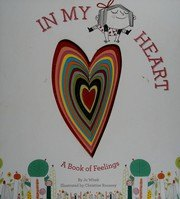
In My Heart: A Book of Feelings
Jo Witek · Christine Roussey
2014 · Abrams Appleseed · ISBN 9781419713101
A die-cut heart runs through the book as each spread gives a different feeling its own shape and texture.

Grumpy Monkey
Suzanne Lang · Max Lang
2018 · Random House Studio · ISBN 9780553537864
Jim’s friends keep trying to cheer him up. The story makes space for having a difficult day without needing to explain it.

The Color Monster: A Story About Emotions
Anna Llenas
2018 · Little, Brown Books for Young Readers · ISBN 9780316450010
Collage and colour give young readers a starting point for naming feelings, including ones that are hard to separate.
Home and belonging
Books about the places, people and routines that make somewhere feel like home. For related titles, see Migration, refuge and belonging and Jeannie Baker.

Home
Carson Ellis
2015 · Candlewick Press · ISBN 9780763665296
Real and imagined dwellings share the page, inviting readers to look for what connects very different places people call home.

A House That Once Was
Julie Fogliano · Lane Smith
2018 · Roaring Brook Press · ISBN 9781626723146
Two children piece together possible lives from what remains in an abandoned house. Look at how the pictures distinguish what the children see from what they imagine.

Home in the Woods
Eliza Wheeler
2019 · New York: Nancy Paulsen Books · ISBN 9780399162909
After a father’s death during the Great Depression, a family turns a woodland shack into a home. The changing seasons mark the slow work of making a life there.
Homelessness and housing insecurity
These books look at temporary shelters, insecure housing and the experience of being overlooked. Preview them before sharing with children whose own housing arrangements may be uncertain.

A Place to Stay: A Shelter Story
Erin Gunti · Estelí Meza
2019 · Barefoot Books · ISBN 9781782858256
A girl and her mother use imagination to make a women’s shelter feel less unfamiliar. The back matter discusses reasons people may need temporary shelter.

Still a Family: A Story about Homelessness
Brenda Reeves Sturgis · Jo-Shin Lee
2017 · Albert Whitman · ISBN 9780807577073
A girl and her parents keep their family routines going while living in different shelters. She misses her own room and describes the everyday practicalities of shelter life.

The Can Man
Laura E. Williams · Craig Orback
2010 · Lee & Low Books · ISBN 9781600602665
When Tim collects cans to buy a skateboard, he begins to understand why his neighbour collects them too. Useful for discussing what Tim learns and whose perspective the story follows.

The Invisible
Tom Percival
2021 · Simon & Schuster UK · ISBN 9781471191305
After her family moves because they cannot afford to stay, Isabel feels overlooked and notices others in the same position. The illustrations use visibility to explore poverty and belonging.
Bodies, consent and growing up
For books that centre gender identity, sexuality and families, see Gender and sexuality.

Bodies Are Cool
Tyler Feder
2021 · Puffin · ISBN 9780241519936
An illustrated celebration of varied body shapes, skin tones and ways of moving. For preschool and early primary read-alouds.
- Cover pending
The Bare Naked Book
Kathy Stinson · Melissa Cho
2021 · Revised edition · Annick Press
Names body parts using everyday settings and diverse bodies. Includes straightforward illustrations of nudity. For preschool and early primary shared reading.
- Cover pending
Yes! No!: A First Conversation About Consent
Megan Madison and Jessica Ralli · Isabel Roxas
2022 · Rise x Penguin Workshop
A shared-reading prompt about permission and how to respond when someone says no. For preschool and early primary.
- Cover pending
My Body! What I Say Goes!
Jayneen Sanders
Educate2Empower Publishing · 2nd ed.
A body-safety discussion book about personal boundaries and asking a trusted adult for help. For adult-guided early primary reading.

It’s So Amazing!: A Book about Eggs, Sperm, Birth, Babies, Gender, and Families
Robie H. Harris · Michael Emberley
2024 · Revised edition · Candlewick Press · ISBN 9781536207231
Illustrated nonfiction for ages 7 and up. It covers anatomy, reproduction, gender and different ways families are formed, with diagrams and cartoons.
Picturebooks in languages other than English
Explore picturebooks written in languages other than English and compare editions in English where listed.
 Cover pending
Cover pendingElefantmannen
Mariangela Di Fiore · Hilde Hodnefjeld
Norwegian original · 2013 · Cappelen Damm
A personal favourite. English translation: Elephant Man
- Cover pending
El libro negro de los colores
Menena Cottin · Rosana Faría
Spanish original
The Black Book of Colors
 Cover pending
Cover pendingUn grand jour de rien
Beatrice Alemagna
French original · 2016 · Albin Michel Jeunesse
On a Magical Do-Nothing Day
- Cover pending
- Cover pending
ぐりとぐら
Rieko Nakagawa · Yuriko Yamawaki
Japanese original · Fukuinkan Shoten
Guri and Gura
- Cover pending
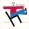
Les chaises
Louise-Marie Cumont
Wordless · Nantes · Éditions MeMo · 2009 · ISBN 9782352890416
Fabric shapes make a chair into a stage. Look at how a change in pose can alter the relationship between figures from one spread to the next.
Edition and cover details Cover pending
Cover pendingO Meu Avô
Catarina Sobral
Portuguese · Lisboa · Orfeu Negro · First published 2014 · ISBN 9789898327321 (publisher’s listed edition)
A retired watchmaker and a busy doctor live by different rhythms. Look for references to painting and film as their routines intersect.
Edition and cover details Cover pending
Cover pendingA Guerra
José Jorge Letria (text) · André Letria (illustration)
Portuguese · Lisboa · Pato Lógico · 2018 · ISBN 9789899965881
Restrained imagery gives war an unsettling presence. For older readers or supported discussion of war and its effects.
Edition and cover details- Cover pending
Como criar uma biblioteca
Inês Fonseca Santos (text) · André Letria (illustration)
Portuguese · Pato Lógico · 2024 · ISBN 9789895354689
A library starts with books one wants to keep close. Compare the tall stack on the cover with the small reader below and consider what that difference in scale suggests.
- Cover pending
O mundo num segundo
Isabel Minhós Martins (text) · Bernardo P. Carvalho (illustration)
Portuguese · Planeta Tangerina · 2013 edition · ISBN 9789898145550
Comic-like views of different places unfold during the same second. Follow what changes across each page turn and what stays simultaneous.
Edition and cover details  Cover pending
Cover pendingCoração de mãe
Isabel Minhós Martins (text) · Bernardo P. Carvalho (illustration)
Portuguese · Planeta Tangerina · First published 2008 · ISBN 9789898145048
An almost invisible thread makes the bond between mother and child visible. Follow how that line links moments of joy, worry and separation.
Edition and cover details- Cover pending
Com o tempo
Isabel Minhós Martins (text) · Madalena Matoso (illustration)
Portuguese · Planeta Tangerina · 2014 · ISBN 9789898145604
Pair the pictured changes across spreads and ask which could be noticed in a day and which need years.
Edition and cover details  Cover pending
Cover pendingFantasmas, bananas e avestruzes
Catarina Sobral
Portuguese · Assembleia da República · 2023 · ISBN 9789725568293
Playful pictured examples give readers a way into the unseen rules that shape daily life. Compare the ghosts with the everyday objects and ask why they share a page.
- Cover pending
Η Σελήνη στο Παρίσι
Αρετή Κατσαντώνη (text) · Χρύσω Χαραλάμπους (illustration)
Greek · Εκδόσεις Φουρφούρι · 2024 · ISBN 9786185819163
The illuminated Eiffel Tower anchors a night-time palette. Look for how changes in scale and colour guide the reader through Paris.
Edition and cover details - Cover pending
Η βάρκα που τη λένε μνήμη: Η μνήμη ως βάλσαμο της ψυχής και θεμέλιο της κοινωνίας
Βαγγέλης Ηλιόπουλος (text) · Ντανιέλα Σταματιάδη (illustration)
Greek · Αθήνα · Νομική Βιβλιοθήκη · 2017 · ISBN 9789605626907
A boat gives remembering a physical shape. Look at how the domestic objects and the watery setting connect an individual memory to a wider community.
Edition and cover details - Cover pending
Plan de rescate
Antía Yáñez; illustrated by Xiana Teimoy
Spanish · Anaya Infantil y Juvenil · ISBN 9788414334607
An illustrated children’s novel about a group of friends who put a rescue plan into action.
Edition and cover details - Cover pending
L’Île de Victor
Marie Sellier; illustrated by Catherine Louis
French · 2020 · Éditions LEP · ISBN 9782606017194
Study how the sparse cover and use of negative space set the tone before the story begins.
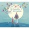
Mi lazarilla, mi capitán
Gonzalo Moure; illustrated by Maria Girón
Spanish · 2020 · Kalandraka · ISBN 9788413430317
A father and daughter navigate the city through sound and imagination. Traditional Chinese edition: 即使看不見，我們還是牽著手穩穩走 (ISBN 9789869990585).
Edition and cover details Traditional Chinese edition
¡Qué suerte tengo!
Lawrence Schimel; illustrated by Juan Camilo Mayorga
Spanish
A boy reflects on everyday moments with his brother José and what makes their relationship special.
Edition and cover details
Yağmur Adam ve En Güzel Dans
Özge Bahar Sunar
Turkish · 2019 · Redhouse Kidz · İstanbul · ISBN 9786052079539
A Turkish picturebook whose illustrations use movement and weather to complement the text.
Edition and cover details- Cover pending
象脚鼓
殷健灵
Chinese · 天天出版社 · ISBN 9787501616039
An illustrated children’s story in the 2021 IBBY disability selection. The elephant-foot drum is central to the protagonist’s story.
Edition and cover details - Cover pending
Μελάκ, μόνος
Αργυρώ Πιπίνη · Αχιλλέας Ραζής
Greek · 2016 · Καλειδοσκόπιο · Αθήνα · ISBN 9789604711215
The illustrations place a child travelling alone in a landscape of displacement.
Edition and cover details
Some books were discovered through Janet Evans’s picturebook recommendations.
Selected covers from publishers. Additional edition covers supplied by Open Library where available.